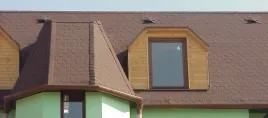
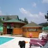
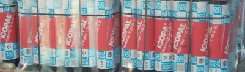
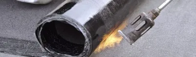
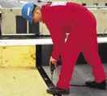
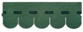
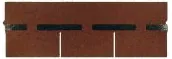
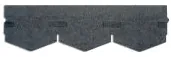
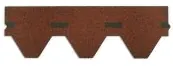
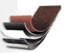

Pásy sa používajú na vytváranie hydroizolačných povlakových krytín strechy a na utesňovanie strešných detailov. Pásy sa tiež používajú na izoláciu podzemných častí objektov. Pásy s povrchovou úpravou vrchnej strany z hrubozrnného minerálneho posypu sa uplatňujú výhradne ako horná vrstva asfaltových krytín. Vytvárajú veľmi účinnú ochranu asfaltovej hydroizolácie proti atmosferickému starnutiu, prelietavému ohňu a proti mechanickému poškodeniu.
Asfaltované pásy typu Hydrobit - pásy s nízkym a stredným zaťažením, použitie pre všetky vrstvy krytiny a tesnenia detailov (len Hydrobit V 60 S 42 H)
Asfaltované pásy typu Glasbit - pásy s vysokým tržným zaťažením, použitie pre všetky vrstvy krytiny a tesnenia detailov a tlakovú hydroizoláciu (len Glasbit G 200 S 42 H)
Podľa potreby je možné jednotlivé pásy kombinovať. Pri potrebe zvýšenia účinnosti, životnosti a ďalších úžitkových vlastností hydroizolačného povlaku je možná kombinácia i s pásmi modifikovanými SBS termoplastickým kaučukom. Sú vhodné aj na opravu krytín na rozmerovo stálych podkladoch. Ich uplatnenie je závislé od rozsahu porušenia povlaku a spôsobu opravy.


HYDROBIT V60 S42 v rôznych farbách


JCP šindle sú určené na pokrývanie šikmých striech. Realizujú sa z nich ľahké, skladané krytiny s veľmi dobrou funkčnosťou a odolnosťou voči poveternostným vplyvom. Asfaltové šindle sú vyrábané zo špeciálnej asfaltovej krycej hmoty na sklenenej rohoži so zvýšenými mechanickými vlastnosťami. Vrchná strana šindľov je upravená vysokokvalitným hrubozrnným posypom so zvýšenou farebnou stálosťou. Táto povrchová úprava vytvára veľmi účinnú ochranu asfaltovej hydroizolácie proti atmosferickému starnutiu, prelietavému ohňo a proti mechanickému poškodeniu. Taktiež dlhodobo účinne chráni asfaltovú hydroizoláciu pred ultrafialovými lúčmi.

Tvar „bobrovka“ má dlhoročnú tradíciu v našej architektúre. Je estetický a nepodlieha módnym trendom. Dodáva elegantný a graciózny vzhľad pre každú strechu. Farebná škála pozostáva zo štyroch základných farieb: odtieň červenej, hnedej, zelenej a čiernej farby.

Obľúbený tvar „obdĺžnik“ po celom svete, ktorý spája v sebe jednoduchosť a krásu. Svojím estetickým vzhľadom ponúka bohaté možnosti architektonických riešení stavieb. Farebná škála pozostáva zo štyroch základných farieb: odtieň červenej, hnedej, zelenej a čiernej farby a troch melírovaných farieb, červenej, hnedej a zelenej.

Špeciálne navrhnutý tvar „diamant“ pre tých vlastníkov domov, ktorí túžia po vzhľade kombinujúci luxus a eleganciu bez investovania vysokej ceny do strechy. Farebná škála pozostáva zo štyroch základných farieb: odtieň červenej, hnedej, zelenej a čiernej farby.


Tento model šesťuholníkového tvaru môže byť s úspechom použitý na akýkoľvek tvar strechy. V každom farebnom prevedení umožňuje dosiahnuť moderný a zároveň príjemný mozaický efekt. Farebná škála pozostáva zo štyroch základných farieb: odtieň červenej, hnedej, zelenej a čiernej farby.
ŠTRUKTÚRA JCP ŠINDLOV
Chceš cenu na konkrétne množstvo? Zavolaj alebo napíš, cenovú ponuku spravíme zadarmo.
Spočítame spotrebu, pripravíme ponuku a dohodneme dopravu na stavbu. Zvyčajne do niekoľkých dní.